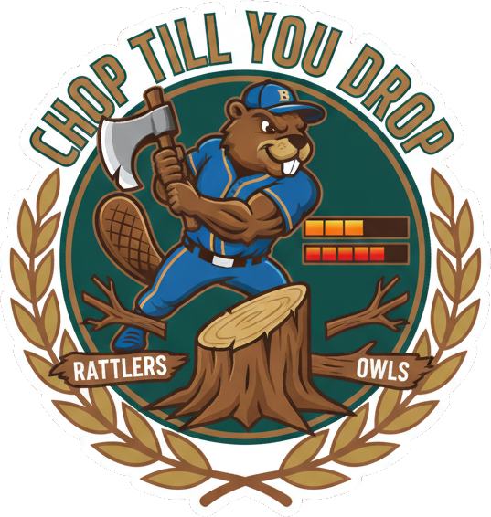

Tap the left / right side of the tree, or the buttons, to chop

Tap the left / right side of the tree or CHOP ◀ / ▶ (keyboard: ← → or A / D) to chop & switch sides. Dodge the branches — ducks, huskies & the whole rival conference. Keep chopping before the stamina bar runs dry. Endless. Don't drop.